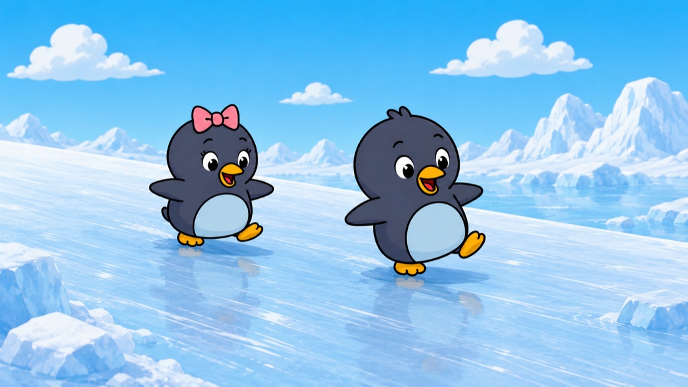
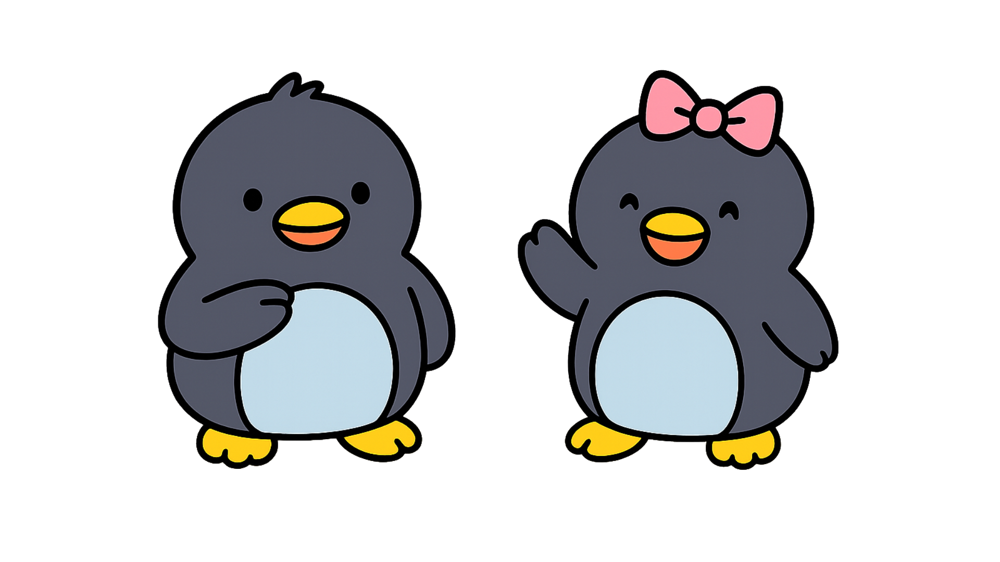

말할 영어와 생각할 내용을 먼저 채워주고, 그것을 자기 말로 꺼내게 합니다.
카카오톡 채널 추가12월 파일럿 참여 안내를 카카오톡 채널로 보내드립니다.

피코와 포미가 이야기를 읽어 줍니다. 혼자 읽는 아이는 읽으며 듣고, 아직 읽기 전인 아이는 들으며 따라옵니다. 이야기 속 장면과 표현이 충분히 쌓이면, 아이는 이해한 내용을 자기 말로 이야기합니다.
한 챕터를 두 부분으로 나눠 할 수 있습니다. 시간이 다 되어 끝나는 것이 아니라, 활동을 마치면 끝납니다.
이야기와 핵심 표현을 캐릭터 음성으로 듣고, 피코와 포미의 질문에 답합니다.
이야기 속 인물이 되어 대사를 말합니다. 익숙해지면 대사를 가리고 말합니다.
읽은 이야기를 자기 말로 다시 들려줍니다. 막히면 그림과 문장 시작이 도와줍니다.
"왜 그랬을까?" 정답 없는 질문에 답하고, 피코와 자유롭게 이야기합니다.
이야기를 읽는 데서 끝나지 않습니다. 인물은 왜 그렇게 선택했는지, 친구의 마음은 어땠을지, 나라면 어떻게 했을지. 리딩펭귄은 이야기 속 질문을 독후 대화로 이어, 아이가 영어로 생각을 말하는 경험을 쌓게 합니다.
피코와 포미, 레베카, 메이플의 이야기. 혼자 챕터북을 읽는 7세 이상 아이를 위한 6권 시리즈입니다.
종이책과 eBook으로 만나실 수 있습니다. 출간 소식은 카카오톡 채널로 알려드립니다.

아이의 말하기 상대는 언제나 피코와 포미입니다. 아이가 영어로 무언가 말하면, 귀를 쫑긋 세우고 끝까지 들어줍니다. 맞든 틀리든 괜찮습니다. 영어로 많이 말해 보는 것이 먼저입니다.
This program is inspired by Dr. Stephen Krashen, Dr. Patricia K. Kuhl, and Austin Public Library.
영어발화 프로그램은 4세 이상입니다. 짧은 이야기를 듣고 따라가며, 짧은 문장으로 따라 말할 수 있는 아이에게 맞습니다. 4~6세는 보호자 보조 하에, 7세 이상은 혼자 이용할 수 있습니다. 전이리더스 책은 혼자 챕터북을 읽는 7세 이상 아이를 위한 것입니다.
리딩펭귄은 영어 초보자용 프로그램이 아닙니다. 짧은 이야기를 듣고 따라갈 수 있는 정도의 영어가 준비된 아이에게 가장 잘 맞습니다.
한 챕터를 두 부분으로 나눠 할 수 있고, 중단한 곳에서 이어집니다. 안내 시간은 파일럿에서 실제로 측정한 뒤 알려드립니다.
태블릿과 헤드셋입니다. 인터넷 브라우저에서 바로 열리므로 앱을 내려받지 않아도 됩니다. 아이 목소리를 들어야 하므로 마이크 사용을 허용해 주세요.
기기를 준비하고, 헤드셋을 씌워 주고, 시작과 이어하기를 눌러 주세요. 그다음은 옆에서 지켜봐 주시면 됩니다. 말하기 상대는 피코와 포미가 맡습니다. 답을 알려주거나 따라 말하게 하지 않는 것을 권장합니다.
12월 파일럿을 준비하고 있습니다. 카카오톡 채널을 추가해 두시면 참여 안내를 가장 먼저 보내드립니다.